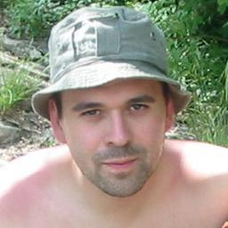
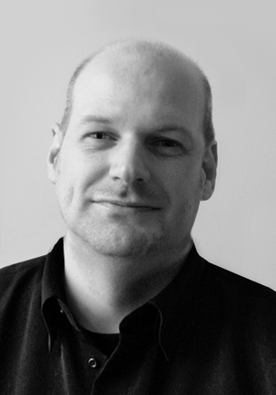
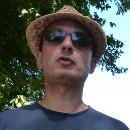
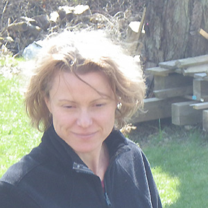
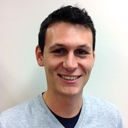
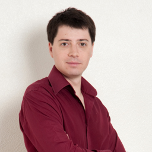
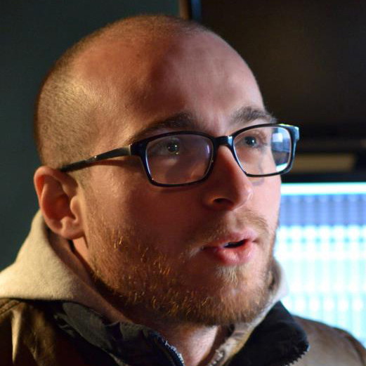
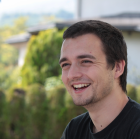
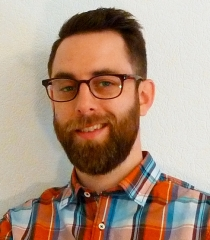
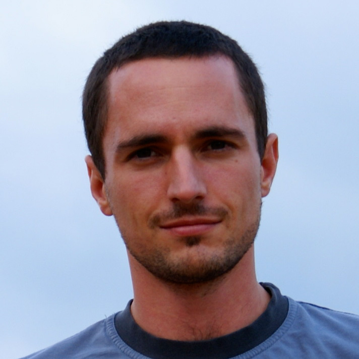

Admin-sys / Développeur
Je suis un développeur passionné par les Logiciels Libres, les méthodologies (agiles…), la programmation
en Python… mais aussi la politique, l'histoire, la philosophie…
Je suis télétravailleur pour la société coopérative d’ingénieurs
Bearstech.
Ce que je recherche dans un espace coworking, c'est un lieu pour rencontrer des personnes,
partager des connaissances, des expériences… expérimenter ses idées… mutualiser des compétences.
J'espère que l'espace Coworking Metz permettra de constituer et rassembler une communautée
IT dans la région et je l'espère devenir son
point de Schelling.

Développeur web
Je suis un développeur web passionné de technologies, d’interactivité, de design,
de cuisine et tout récemment de course à pied. J'adore refaire le monde avec mes amis.
Mon idéalisme et ma naïveté me permettent de croire en de belles utopies qui seront,
j'espère, notre monde de demain.
Bernard Stiegler appelle de
ses voeux l'émergence d'une
économie contributive basée sur la création et le partage
de la connaissance. Un espace de coworking n'est-il pas le lieu rêvé pour expérimenter cela ?
Cédric Schoenecker
Designer freelance
Je suis designer indépendant dans le web et le print, passionné par le design graphique et le monde de la communication.
Ce que je recherche dans un espace de Coworking, c'est le partage de connaissance, les échanges, ne pas se sentir isolé.

Intégrateur front-end
Intégrateur web curieux de nouvelles technologies, de graphisme et de design, mais aussi de l'évolution de nos sociétés, de gastronomie et de synthétiseurs, d'histoire et de nature, de jardinage et d'Arduino, de conquête spatiale et de grand air…
Je vois dans le coworking une opportunité pour changer notre rapport au travail et à la connaissance par la coopération, le partage et l'émulation.

Chef de projets web
Chef de projets web, je suis extrêmement curieuse et enthousiasmée par tous les projets qui proposent d'améliorer notre manière de vivre collectivement en société, que ce soit dans le web, l'agriculture inventive (permaculture) ou dans bien d'autres domaines quand ils sont portés par des personnes passionnées. Le changement commence par nos choix individuels mais c'est en rassemblant nos énergies que nous pouvons faire évoluer la société et faire naitre des projets innovants et ambitieux. Changer notre manière de travailler en adoptant le coworking, c'est changer la manière de concevoir le travail en jouant sur ses structures et créer les conditions propices au développement de notre créativité.
Chef de projets informatiques
Chef de projet dans l’informatique depuis 2000, j’utilise différentes méthodologies (PMI, Agile) et concepts (Six Sigma, LEAN, User Experience, ITIL,…) afin de satisfaire mes différents clients pour des demandes diverses : web, eCommerce, SalesForce.Com, ERP, compliance, etc…
Adopter le coworking, c’est partager les connaissances de personnes différentes et pouvoir se remettre en question avec d’autres points de vues.

Entrepreneur
Je suis fondateur de la société OrgaNeo, spécialisée dans la gestion des biodéchets et l'agriculture périurbaine. Ma société travaille en partenariat avec les collectivités et les entreprises sur tout le territoire français. C'est au cours de mes déplacements que j'ai pu découvrir le coworking. Il s'agit d'un concept qui permet de rompre la solitude des télétravailleurs et de mettre en réseau de nombreuses compétences.

Passioné
Passionné par l'informatique et les technologies du Web, je suis un jeune entrepreneur dans l'âme. Le coworking est pour moi un opportunité de recontrer, d'échanger et de partager avec d'autres personnes de tout horizon pour y trouver une richesse proffessionelle.
Développeur web indépendant
Je suis développeur web indépendant (intégrateur), et formateur Wordpress.
Je travaille principalement pour des TPE/PME, 90% des sites internet que je mets en place sont fait avec Worpdress.
J'affectionne particulièrement l'accompagnement des petites et moyennes structures.
Le coworking c'est un soufle nouveau, humain & professionnel, c'est aussi un changement de modèle, et ça c'est vraiment maintenant.

Chargé de projet multimédia
Spécialisé dans la création graphique et le community management, mes compétences résident
globalement dans la communication et l'image. Je m'exerce également à la photographie et
à la réalisation de vidéos court format.
Évoluer dans un lieu d'échanges… Le concept de Coworking Metz m'a tout de suite séduit !
De plus, travaillant en freelance, j'avais besoin d'un espace comme celui-ci pour
établir une rupture entre le lieu privé (l'habitation) et le lieu professionnel (le bureau).

Développeur indépendant
Développeur indépendant, j'aime toucher à tout, mais j'ai plus d'expérience dans le domaine de la réalité augmenté et du traitement
d'image en C++ sous Unix. J'ai une affinité particulière pour les "interfaces papier", ou comment contrôler des ordinateurs avec des
cartes ou des feuilles pour garder le meilleur des deux mondes. Je suis accroc à la découverte de nouvelles technologies (Android,
Scala, Docker…) et l'aspect "échange" du coworking me promet des opportunités d'élargir mes horizons !

Responsable Grands Comptes Europe
Passionné par l’informatique et les nouvelles technologies depuis mon adolescence, j’évolue depuis 8 ans
avec le plus grand plaisir dans le secteur créatif et dynamique qu’est le jeu vidéo. J’officie en tant que
responsable commercial et licensing chez l’éditeur de jeux sur mobiles
Connect2Media.
Après une expatriation de 5 ans en Angleterre, je suis devenu télétravailleur.
L’espace coworking est essentiel pour partager les connaissances,
rompre la solitude et augmenter la productivité !

designer multimédia indépendant
Je suis designer multimédia indépendant, créateur de
whynotprod.com et mon parcours depuis 10 ans me permet de travailler dans des domaines variés tels que le web, le print, la vidéo et la 3d. J’ai été ravi d’apprendre qu’un espace coworking allait ouvrir à Metz. Je trouve ce système de fonctionnement résolument innovant. C’est une réelle opportunité de « sortir de sa bulle », d’échanger, découvrir et partager des idées et pourquoi pas, de faire naître de nouveaux projets.
<%block name="head">
${parent.head()}